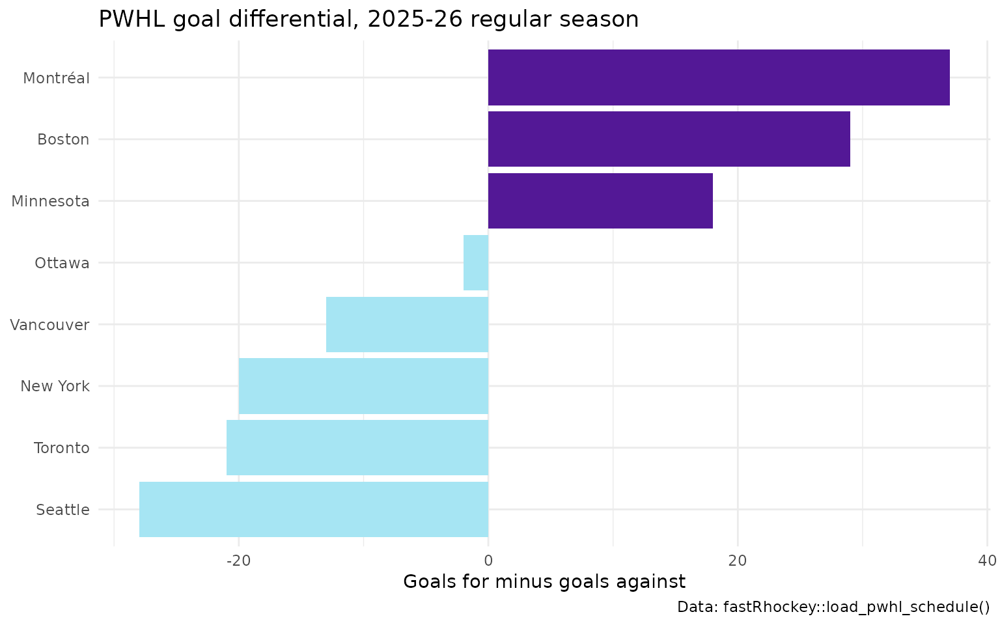

PWHL and College Hockey Data in R: Women's Pro and NCAA Hockey with fastRhockey
Saiem Gilani, Ben Howell
Source:vignettes/articles/pwhl-and-college-hockey.Rmd
pwhl-and-college-hockey.RmdfastRhockey covers the Professional Women’s
Hockey League (PWHL) end to end, and NCAA men’s and women’s college
hockey through ESPN. For the PWHL you can load whole seasons of
pre-built data in seconds, or call the league’s live HockeyTech feed for
today’s games, shifts and on-ice Corsi. For college hockey, the
espn_mch_*() and espn_wch_*() families mirror
ESPN’s NHL wrappers.
What you’ll learn
- Which PWHL loaders exist and what each returns.
- How to build a standings table and a scoring leaderboard from the loaders.
- Which live PWHL functions to use for schedules, play-by-play, shifts, time on ice and Corsi.
- How to get NCAA men’s and women’s college hockey scoreboards, play-by-play and box scores.
New to the package? Start with Getting started with fastRhockey.
What is the PWHL?
The PWHL began play in January 2024 with six teams: Boston,
Minnesota, Montréal, New York, Ottawa and Toronto. Seattle and Vancouver
joined for 2025-26. In fastRhockey, PWHL seasons are end
years, so season = 2026 is 2025-26 and the inaugural season
is 2024.
Which PWHL loaders are there?
The load_pwhl_*() functions read one file per season
from the sportsdataverse-data
releases. They are the fastest way to get PWHL data, and they don’t
touch the league’s own servers.
| Loader | One row per |
|---|---|
load_pwhl_pbp() |
Play-by-play event, with coordinates, on-ice players and strength state |
load_pwhl_xg_pbp() |
Shot on goal, with expected goals (xG) |
load_pwhl_shifts() |
Player shift |
load_pwhl_schedule() |
Game |
load_pwhl_player_box(),
load_pwhl_skater_box(),
load_pwhl_goalie_box()
|
Player per game |
load_pwhl_team_box() |
Team per game |
load_pwhl_rosters(),
load_pwhl_game_rosters()
|
Player per season, or per game |
load_pwhl_game_info() |
Game metadata |
load_pwhl_scoring_summary(),
load_pwhl_penalty_summary()
|
Goal or penalty |
load_pwhl_three_stars(),
load_pwhl_officials()
|
Star or official per game |
load_pwhl_shots_by_period(),
load_pwhl_shootout()
|
Team period, or shootout attempt |
Aliases named to match sportsdataverse-py
(load_pwhl_schedules(),
load_pwhl_skater_boxscores(), …) return the same data.
update_pwhl_db() keeps a local database of play-by-play up
to date. The full list is in the PWHL Data Loaders
section of the reference.
Build a standings table from the schedule
library(fastRhockey)
library(dplyr)
library(ggplot2)
schedule <- load_pwhl_schedule(seasons = 2026)
regular <- schedule %>%
filter(game_type == "regular", game_status != "") %>%
mutate(home_score = as.integer(home_score), away_score = as.integer(away_score)) %>%
filter(!is.na(home_score), !is.na(away_score))
standings <- bind_rows(
regular %>% transmute(team = home_team, gf = home_score, ga = away_score),
regular %>% transmute(team = away_team, gf = away_score, ga = home_score)
) %>%
group_by(team) %>%
summarise(
games = n(),
goals_for = sum(gf),
goals_against = sum(ga),
goal_diff = goals_for - goals_against,
.groups = "drop"
) %>%
arrange(desc(goal_diff))
standings
#> # A tibble: 8 × 5
#> team games goals_for goals_against goal_diff
#> <chr> <int> <int> <int> <int>
#> 1 Montréal 30 78 41 37
#> 2 Boston 30 74 45 29
#> 3 Minnesota 30 91 73 18
#> 4 Ottawa 30 71 73 -2
#> 5 Vancouver 30 68 81 -13
#> 6 New York 30 63 83 -20
#> 7 Toronto 30 51 72 -21
#> 8 Seattle 30 64 92 -28The PWHL awards three points for a regulation win and two for an
overtime or shootout win, so for official points use
pwhl_standings(), which calls the live feed.
ggplot(standings, aes(x = goal_diff, y = reorder(team, goal_diff), fill = goal_diff > 0)) +
geom_col(show.legend = FALSE) +
scale_fill_manual(values = c(`TRUE` = "#531896", `FALSE` = "#A6E5F3")) +
labs(
title = "PWHL goal differential, 2025-26 regular season",
x = "Goals for minus goals against", y = NULL,
caption = "Data: fastRhockey::load_pwhl_schedule()"
) +
theme_minimal()
Who led the league in scoring?
skaters <- load_pwhl_skater_box(seasons = 2026)
skaters %>%
group_by(player_id, first_name, last_name) %>%
summarise(
games = n_distinct(game_id),
goals = sum(as.integer(goals), na.rm = TRUE),
assists = sum(as.integer(assists), na.rm = TRUE),
points = sum(as.integer(points), na.rm = TRUE),
shots = sum(as.integer(shots), na.rm = TRUE),
.groups = "drop"
) %>%
arrange(desc(points), desc(goals)) %>%
head(10)
#> # A tibble: 10 × 8
#> player_id first_name last_name games goals assists points shots
#> <chr> <chr> <chr> <int> <int> <int> <int> <int>
#> 1 23 Kelly Pannek 35 17 20 37 72
#> 2 21 Taylor Heise 35 13 19 32 107
#> 3 189 Britta Curl-Salemme 34 11 20 31 64
#> 4 42 Abby Roque 38 12 18 30 84
#> 5 72 Rebecca Leslie 38 18 11 29 120
#> 6 32 Laura Stacey 39 10 19 29 141
#> 7 58 Brianne Jenner 38 12 15 27 98
#> 8 36 Jessie Eldridge 34 14 12 26 95
#> 9 31 Marie-Philip Poulin 28 11 15 26 86
#> 10 25 Grace Zumwinkle 34 14 11 25 99These totals include playoff games; filter game_id
against the schedule’s game_type for regular season
only.
Play-by-play, shifts and xG
load_pwhl_pbp() has one row per event. Coordinates are
in feet from centre ice in several frames (see the rink plots article), and
strength_state gives the skater count.
pwhl_pbp <- load_pwhl_pbp(seasons = 2026)
pwhl_pbp %>%
filter(event %in% c("shot", "goal")) %>%
count(strength_state, sort = TRUE) %>%
head(8)
#> # A tibble: 8 × 2
#> strength_state n
#> <chr> <int>
#> 1 5v5 5208
#> 2 5v4 796
#> 3 4v5 725
#> 4 5v3 144
#> 5 4v4 139
#> 6 5v6 126
#> 7 6v5 124
#> 8 3v5 105A republish of the PWHL release files with corrected
x_coord columns is pending, so the derived coordinate
columns in files loaded today may predate the fix in
fastRhockey 1.1.0.
For shot quality, load_pwhl_xg_pbp() adds expected goals
to each shot on goal. How that model works, and its known issues, are in
the PWHL expected goals
article.
Which live PWHL functions should I use?
The pwhl_*() functions call the PWHL’s HockeyTech feed
directly. Use them for games in progress, for data the loaders don’t
have, or for the newest season before the loaders catch up. They are not
run on this page.
# league and schedule
pwhl_teams()
pwhl_schedule(season = 2026)
pwhl_scorebar(days_back = 3, days_ahead = 3)
pwhl_standings(season = 2026)
pwhl_playoff_bracket(season = 2026)
# one game
pwhl_pbp(game_id = 27)
pwhl_player_box(game_id = 27)
pwhl_game_summary(game_id = 27)
# on-ice analytics for one game
pwhl_game_shifts(game_id = 42)
pwhl_player_toi(game_id = 42)
pwhl_game_corsi(game_id = 42)
# players and leaders
pwhl_leaders(position = "skaters", season = 2026)
pwhl_stats(position = "goalie", season = 2026)
pwhl_player_game_log(player_id = 28, season = 2026)pwhl_game_corsi() returns on-ice Corsi and Fenwick per
player for one game. To compute the same metrics for a whole season
yourself, follow Corsi, Fenwick and PDO
in R using load_pwhl_pbp() and
load_pwhl_shifts().
The AHL, OHL, WHL and QMJHL run on the same HockeyTech platform, so
ahl_*(), ohl_*(), whl_*() and
qmjhl_*() offer the same set of functions
(ahl_schedule(), ahl_pbp(),
ahl_game_corsi(), …). See the AHL, OHL, WHL and QMJHL reference
sections.
How do I get NCAA college hockey data?
ESPN covers Division I men’s and women’s college hockey.
espn_mch_*() is men’s college hockey and
espn_wch_*() women’s; the two families have the same
functions, mirroring the ESPN
NHL family. These call ESPN’s API and are not run here.
Men’s college hockey
# games on a date (YYYYMMDD)
scores <- espn_mch_scoreboard(dates = "20250110")
# one game
espn_mch_pbp(game_id = "401717648")
espn_mch_team_box(game_id = "401717648")
espn_mch_player_box(game_id = "401717648")
espn_mch_summary(event_id = "401717648")
# season context
espn_mch_standings(season = 2025)
espn_mch_rankings()
espn_mch_teams_site()Women’s college hockey
espn_wch_scoreboard(dates = "20250110")
espn_wch_pbp(game_id = "401762970")
espn_wch_player_box(game_id = "401762970")
espn_wch_standings(season = 2025)
espn_wch_rankings()A typical workflow: pull a date’s scoreboard, take its game ids, then
loop over espn_mch_pbp() or
espn_mch_player_box(). Keep loops modest and pause between
requests. Each family has 121 men’s and 121 women’s functions, covering
athletes, coaches, rankings, odds and more; see ESPN College Hockey
in the reference.
Where to go next
-
PWHL expected goals (xG)
model: the model behind
load_pwhl_xg_pbp(). - Rink plots and shot maps: PWHL shot maps and team-coloured rinks.
- Corsi, Fenwick and PDO in R: shot-share metrics.
- European hockey leagues: thirteen leagues across Europe.
- The Professional Women’s Hockey League and PWHL Data Loaders reference sections, and Getting started with fastRhockey.